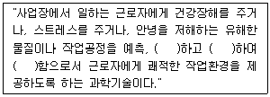
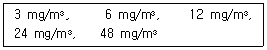
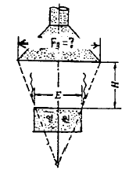

산업위생관리산업기사 (2002-03-10 기출문제)
1과목: 산업위생학 개론
1. 대사량에 관한 설명으로 알맞지 않은 것은?
- 인체가 안정시 생체기능 유지에 필요한 최소의 열량을 기초대사량이라 한다.
- 정신적노동은 기초대사량을 50%이상 증가시킨다.
- 노동의 강도는 기초대사량의 2배까지를 경노동으로 구분한다.
- 노동시 대사량은 단시간의 동작이면 기초대사량의 10배까지 될 수 있다.
(정답률: 57%)

2. 격심작업의 실동율(%)은?
- 50 이하
- 60 이하
- 65 이하
- 70 이하
(정답률: 64%)
3. 중금속 중독에서 납(pb)중독의 중요증상과 가장 거리가 먼 것은?
- 심한 시력장해가 오고 혼수상태에 빠진다.
- 연선(lead line)이 생기고 빈혈증이 온다.
- 연산통이 생긴다.
- 소변에 coproporphyrin배설량이 증가된다.
(정답률: 60%)
4. 아연을 다루는 작업조건에 금기 또는 고려되어야 하는 신체조건은?
- 간질환
- 기관지염
- 고혈압
- 당뇨병
(정답률: 52%)
5. 피로의 검사방법으로 심리학적 방법의 검사항목이 아닌것은?
- 피부의 저항
- 동작분석
- 집중유지기능
- 인지역치
(정답률: 50%)
6. 중등작업에 관한 설명으로 알맞지 않은 것은?
- 작업대사율은 1 ~2 이다
- 실동율은 80 ~ 76% 이다
- 1일 소비열량(남,Kcal)은 3⑤0 ~ 3500 이다
- 쉬지 않고 6시간 계속 작업이 가능하다.
(정답률: 39%)
7. 특수 건강진단을 실시하지 않아도 되는 작업은?
- 소음, 진동작업
- 유기용제의 제조 및 취급작업
- 고온 및 저온작업
- 유해광선 작업
(정답률: 64%)
8. 1945년 일본에서 '이타이이타이병'이란 중독사건이 생겨 수많은 환자가 발생, 사망한 사례가 있었다. 어느 물질에 의한 것인가?
- 납
- 크롬
- 수은
- 카드뮴
(정답률: 70%)
9. 착암기 또는 해머(Hammer)같은 공구를 장기간 사용한 근로자에게 가장 유발되기 쉬운 직업병은?
- 피부암
- 레이노드 증상
- 두통
- 소화 장애
(정답률: 63%)
10. 대량의 염분상실을 동반한 발한과다를 초래하는 고열폭로에 의한 증상은?
- 열성발진
- 열경련
- 열사병
- 열쇠약
(정답률: 85%)
11. 작업강도에 영향을 미치는 중요한 요인으로 가장 거리가 먼 것은?
- 기초대사량
- 작업의 정밀도
- 작업자세
- 대인접촉 빈도
(정답률: 40%)
12. 직업성 피부질환의 간접적인 요인에 관한 설명으로 알맞지 않은 것은?
- 연령 : 젊은 근로자들이나 일에 미숙한 근로자 일수록 피부질환이 많이 발생하는 경향이 있다.
- 인종 : 인종특색에 따라 큰 차이가 있다.
- 계절 : 여름에 빈발하게 된다.
- 피부의 종류 : 지루성(OILY SKIN)피부는 비누,용제, 절삭유등에 자극을 덜 받는 것으로 알려져 있다.
(정답률: 37%)
13. 재해율의 종류중 연천인율에 관한 설명으로 알맞지 않은 것은?
- 근로자수, 근로일수의 변동이 많은 사업장은 적합치않다.
- 재해의 강도가 고려된다(사망, 경상등을 차등적용)
- 산출이 용이하며 알기 쉬운 것이 장점이다.
- 재해자수는 사망자, 부상자, 직업병의 환자수를 합친 것이다.
(정답률: 40%)
14. 작업에 수반되는 피로예방 대책으로 가장 거리가 먼것은?
- 불필요한 동작을 피한다.
- 동적인 작업을 늘리고 정적작업을 줄인다.
- 작업속도와 작업량을 조절한다.
- 작업에 따라 충분한 영양 섭취를 한다.
(정답률: 53%)
15. A경영자에 대한 산업보건교육 내용으로 가장 적절한 것은?
- 어떻게 하여야 하는가
- 언제하여야 하는가
- 왜 하여야 하는가
- 무엇을 하여야 하는가
(정답률: 40%)
16. 1911년에 진동공구에 의한 수지의 레이노드씨 현상을 상세히 보고한 사람은?
- Loriga
- G.Agricola
- Galen
- Celsus
(정답률: 70%)
17. 사업장 보건관리자의 직무로 가장 거리가 먼 것은?
- 유해작업조건 및 환경에 대한 점검 및 개선에 대한건의
- 부상자, 질환자, 사망자 및 접근, 이동에 관한 통계작성
- 건강 이상자의 조기발견과 사후조치 강구
- 3차 진료에 대한 계획수립사항
(정답률: 93%)
18. 미국 산업위생사협회(AIHA)에서는 산업위생의 정의를 다음과 같이 정하고 있다. 다음중 빈칸에 들어갈 내용이 아닌 것은?

- 인지(recognition)
- 측정평가(evaluation)
- 제어(control)
- 치료(medical treatment)
(정답률: 75%)
19. 산업피로에 대한 영양대책으로 알맞지 않은 것은?
- 음식물을 섭취하여 체내에서 합성과정인 이화작용, 분해과정인 동화작용 과정을 반복하는 신진대사를 통하여 영양소를 얻는다.
- 열원인 당질, 지방, 소모조직을 보충해 주는 단백질을 3대 영양소라 한다.
- 영양소 연소시 발생한 열량은 지방 1g에 9.3Kcal, 단백질, 당질은 4.1Kcal이다.
- 암모니아 중독이 우려되는 작업환경에서 작업을 하는 작업자에게는 비타민 C를 보충하여야 한다.
(정답률: 39%)
20. 산업피로에 관한 설명으로 알맞지 않은 것은?
- 곤비는 과로의 축적으로 단기간에 회복될 수 없는 단계를 말한다.
- 국소피로와 전신피로는 신체피로 부위의 크기로 구분한다.
- 피로는 비가역적인 생체의 변화로 건강장해의 일종이다.
- 정신적피로,신체적피로는 보통 함께 나타나 구별하기 어렵다.
(정답률: 50%)
2과목: 작업환경측정 및 평가
21. 20%(W/V) NaOH용액의 농도는 몇 N인가? (단, NaOH의 분자량은 40 이다.)
- 4N
- 40N
- 10N
- 5N
(정답률: 알수없음)
22. 분진측정시 작업장내의 분진이 중량으로 직접 숫자로 표시되며 압전형분진계라고도 하는 기기명은?
- 여지 분진계
- Digital 분진계
- 유리섬유 여과계
- piezobalance
(정답률: 34%)
23. 어떤 공장의 유해 작업장에 50% Heptane과 30% methylene chloride, 20% perchloro ethylene가 중량비로 혼합되어 있을 때 이 작업장에서 이 혼합물의 허용농도는? (단, Heptane 허용농도 1600㎎/m3, perchloro ethylene 허용농도 760㎎/m3, methylene chloride 허용농도670㎎/m3)
- 1014㎎/m3
- 994㎎/m3
- 977㎎/m3
- 920㎎/m3
(정답률: 60%)
24. 소음의 단위가 아닌 것은?
- phon
- sone
- ㏈
- ㎐
(정답률: 43%)
25. 작업장 유해인자에 대한 허용농도는 1일 8시간을 기준으로 하는데 8시간 이상 또는 이하 시간동안 폭로된다면 그 환산식은? (단, h = 폭로시간/일, Brief와 Scala의 보정방법 적용 )
- 허용농도환산계수 = (8/h) × ((24-h)/16)
- 허용농도환산계수 = (8/h) × ((24-h)/8)
- 허용농도환산계수 = (8/h) × ((16/(24-h))
- 허용농도환산계수 = (8/h) × ((16/(8-h))
(정답률: 74%)
26. 세기 Io의 단색광이 정색액을 통과하여 그 광의 90%가 흡수되었을 때의 흡광도는?
- 1.0
- 0.9
- 0.5
- 0.1
(정답률: 50%)
27. 유해작업환경에 대한 시료채취에 있어서 농도 시료 채취시간(1측정점)은 일반적으로 얼마 이상으로 하는가?
- 10분
- 20분
- 30분
- 1시간
(정답률: 47%)
28. 옥외 습구흑구 온도지수(WBGT)를 산출하는 식은? (단, NWB : 자연습구온도, GT : 흑구온도, DT : 건구온도)
- 0.7NWB + 0.2GT + 0.1DT
- 0.7NWB + 0.3GT + 0.1DT
- 0.7NWB + 0.3DT
- 0.7NWB + 0.3GT
(정답률: 55%)
29. 0.01%(v/v)은 몇 ppm인가?
- 1
- 10
- 100
- 1000
(정답률: 62%)
30. 작업환경 측정의 표시단위에 대한 연결이 잘못된 것은?
- 분진(석면분진포함) : ㎎/m3
- 소음 : ㏈(A)
- 온열(복사열포함) : ℃
- 가스, 증기, 미스트등 유해물질 : ㎎/m3 또는 ppm
(정답률: 알수없음)
31. 유기인이나 유기황 화합물에 대하여 특히 감도가 높은 가스크로마토그래피의 검출기(detector)로 악취관계 물질분석에 많이 사용되는 것은?
- FID
- TCD
- ECD
- FPD
(정답률: 55%)
32. 다음 중 작업환경의 감시(monitoring)에 관한 목적을 가장 적절하게 설명한 것은?
- 잠재적인 인체에 대한 유해성을 평가하고 적절한 보호대책을 결정하기 위함
- 유해물질에 의한 근로자의 폭로도를 평가하기 위함
- 적절한 공학적 대책수립에 필요한 정보를 제공 하기 위함
- 공정변화로 인한 작업환경 변화의 파악을 위함
(정답률: 42%)
33. 소음계의 성능에 관한 설명으로 틀린 것은?
- 측정가능 주파수 범위는 31.5Hz~8kHz 이상이어야 한다
- 지시계기의 눈금오차는 0.5dB 이내이어야 한다.
- 측정가능 소음도범위는 10~150dB 이상이어야 한다.
- 자동차 소음측정에 사용되는 것의 측정가능 소음도 범위는 45~130dB 이상이어야 한다.
(정답률: 34%)
34. 작업장내에서 분진농도를 측정하였더니 다음과 같이 농도를 얻었다. 기하평균 값은?

- 6 mg/m3
- 12 mg/m3
- 24 mg/m3
- 30 mg/m3
(정답률: 71%)
35. 어떤 공장에 80㏈인 선반기가 2대 있다. 이때 작업장내 소음의 합성 음압도는?
- 82㏈
- 83㏈
- 84㏈
- 85㏈
(정답률: 50%)
36. 공기중에 Carbon Tetrachloride(TLV = 10ppm)가 5ppm 1,2-Dichlorethane(TLV = 50ppm) 20ppm, 1,2-Dibrmoethane(TLV = 20ppm)10ppm으로 오염되어 있다면 이 작업환경의 허용농도 초과여부를 알맞게 판정한 것은?
- 초과한다.
- 초과하지 않는다.
- 판정이 불가능하다.
- 알 수 없다.
(정답률: 44%)
37. 가스·증기상 물질을 액체 포집 방법으로 포집하기 위한 기구가 아닌 것은?
- 미드젯트 인핀저
- 버블러
- 소형가스 흡수관
- 활성탄 튜브
(정답률: 17%)
38. 다음 보정기기 중에서 1차 보정기기 (primary calibrator)가 아닌 것은?
- 스피로 미터
- 비누버블 미터
- 피토우관
- 로타 미터
(정답률: 58%)
39. 미국 ACGIH에서 권장하는 값으로서 오염물질이 잠시라도 한계를 넘어서는 안된다는 상한치를 뜻하는 것은?
- TLV - STEL
- TLV - C
- BLVs
- TLV - TWA
(정답률: 74%)
40. 온도에 관한 기술 중 틀린 것은?
- 상온은 15 ~ 25℃, 실온은 1 ~ 35℃로 한다.
- 찬곳은 따로 규정이 없는 한 0 ~ 15℃의 곳을 뜻한다
- 냉수는 4℃ 이하를 뜻한다.
- 온수는 60 ~ 70℃, 열수는 약 100℃를 말한다.
(정답률: 60%)
3과목: 작업환경관리
41. 전리방사선의 특성을 잘못 설명한 것은?
- X-선의 에너지는 파장에 역비례하며 에너지가 클수록 파장은 짧아진다.
- α -입자는 핵에서 방출되는 입자로서 헬리움원자의 핵과 같이 두개의 양자와 두개의 중성자로 구성되어 있다.
- β -입자는 핵에서 방출되며 음전기로 하전되어 있다.
- γ -입자는 하전되어 있지 않으며 투과성이 거의 없다
(정답률: 24%)
42. 열사병(heat stroke)이 발생했을 때 가장 적절한 응급처치 방법은?
- 통풍이 잘 되는 서늘한 곳에 눕히고 포도당 주사를 준다.
- 생리식염수를 정맥주사하거나 0.1% 식염수를 마시게 한다.
- 얼음물에 몸을 담가서 체온을 39℃이하로 유지 시켜준다.
- 스포츠 음료나 설탕물을 마시게 한다.
(정답률: 70%)
43. 출력이 0.1W인 기계에서 나오는 파워레벨(PWL)은 몇 dB인가?
- 80 dB
- 90 dB
- 110 dB
- 120 dB
(정답률: 40%)
44. 일정량의 전력으로 조명시 가장 밝은 조명을 얻을 수 있는 방법은?
- 직접조명
- 간접조명
- 반직접조명
- 반간접조명
(정답률: 54%)
45. 유기용제를 제거하기 위하여 사용되는 방독마스크의 흡수제로서 가장 흔히 사용되는 것은?
- 활성탄
- Soda lime
- 산용액
- hopcalite
(정답률: 65%)
46. 일반적으로 저주파 차진에 좋고 환경요소에 저항이 크나 감쇠가 거의없고 공진시에 전달률이 매우 큰 방진재료는?
- 금속 스프링
- 방진고무
- 공기 스프링
- 코르크
(정답률: 48%)
47. 유해작업장 소음이 120㏈ 이상 폭로할 때 사용하는 보호구의 착용중 맞는 것은?
- 귀마개(ear plug)만 착용한다.
- 귀덮개(ear muff)만 착용한다.
- 귀마개와 귀덮개를 동시에 착용한다.
- 유리섬유로 된 보호구를 착용한다.
(정답률: 20%)
48. 호흡용 보호구 사용에 관한 설명이다. 바르지 못한 것은?
- 산소결핍이 우려되는 작업장에는 방독마스크가 필요하다.
- 방독마스크 사용시 정화통의 교환은 파괴시간(breakthrough)을 고려하여 교환해야 한다.
- 송풍마스크는 중등 작업시 대략 200L/min 정도면 충분하다.
- 방진마스크는 휘발성 유기물질의 농도가 규정 이하인 곳에서만 사용 가능하다.
(정답률: 50%)
49. 다음 열중증 중에서 인체의 체온조절기능에 장해를 일으키며 중추신경 장해를 일으키는 것은?
- 열피로
- 열사병
- 열경련
- 열허탈
(정답률: 46%)
50. 작업환경에서 발생되는 유해요인을 감소시키기 위한 기본 관리 개선책중 직접적이며 적극적인 대책과 가장 거리가 먼 것은?
- 유해작용이 적은 물질로 대치
- 유해작용이 있는 물질에 대한 개인 보호구 착용
- 유해작용이 있는 물질과 근로자의 격리
- 유해작용이 있는 물질을 사용하는 작업장에 전체환기 시설 내지는 국소 환기시설을 한다.
(정답률: 38%)
51. 분진흡입에 대한 인체의 방어기전을 나타낸 것이다. 적합하지 않은 것은?
- 호흡기를 통하여 인체에 흡입된 먼지는 코 및 상기도 점막에서 분비되는 점액에 포착된다.
- 코 및 상기도에서 분비되는 점액은 소기관지에 이르기까지 섬모운동에 의하며 위쪽으로 3 ~ 4㎝/hour의 속도로 운반된다.
- 먼지의 흡입량이나 점액의 분비량이 너무 많을 때에는 소기관지의 연동, 기침, 재채기등에 의해 밖으로 배출된다.
- 호흡기로 흡입되는 분진중 주로 5 ~ 10㎛크기의 먼지가 폐포에 들어가 축적된다.
(정답률: 24%)
52. 인양작업시 작업조건으로 적합하지 않은 내용은?
- 무릎은 항상 굴절시킨다.
- 등은 가능한 한 지면에 수평이 되도록 유지시킨다.
- 한쪽발은 들어 올릴 물건을 따라 고정시키고 다른 발은 그 뒤에 고정시킨다.
- 최초의 힘은 뒷발쪽에 힘을 주어 인양한다.
(정답률: 42%)
53. 다음 중 자외선이 통과하지 못하는 물질은?
- 투과성 비닐
- 셀로판지
- 석영
- 보통유리
(정답률: 29%)
54. 다음에 열거한 위생보호구와 작업을 가장 적절하게 연결한 것은?
- 전기용접 - 차광안경
- tank내 분무도장 - 방진마스크
- 갱내토석굴착 - 송풍마스크
- 병타기공정 - 고무제 보호의
(정답률: 40%)
55. 공기중의 SO2와 HCN과 같이 반응양상이 다른 유해물질이 일으키는 작용은?
- 길항작용
- 상가작용
- 독립작용
- 상승작용
(정답률: 28%)
56. 다음의 유해가스중 단순질식성 가스가 아닌 것은?
- 수소가스
- 일산화탄소가스
- 질소가스
- 메탄가스
(정답률: 15%)
57. 실내공기오염의 지표가 되는 것은?
- 일산화탄소
- 암모니아 가스
- 메탄가스
- 이산화 탄소
(정답률: 39%)
58. 진동공구는 무게를 몇 kg 이상 초과하지 않는 것이 바람직한가?
- 5㎏
- 10㎏
- 20㎏
- 30㎏
(정답률: 50%)
59. 진동에 의한 생체반응을 고려하여 기준을 설정할 때 다음중 고려하지 않는 것은?
- 진동의 강도
- 방향
- 진동수
- 변위
(정답률: 32%)
60. 저산소증에 관한 설명으로 맞지 않는 것은?
- 산소공급정지가 2분이상일때는 뇌의 활동성이 회복 되지 않고 비가역적 파괴가 일어난다.
- 산소농도가 6% 라면 혼수,호흡감소 및 정지, 6∼8분 후 심장이 정지한다.
- 산소결핍에 가장 민감한 조직은 뇌 특히 대뇌 피질이다.
- 정상공기의 산소함유량은 21%정도이며 질소가 78%, 탄산가스가 1%정도를 차지하고 있다.
(정답률: 50%)
4과목: 산업환기
61. 분진을 함유하는 가스에 선회운동을 시켜서 가스로 부터 분진을 분리 포집하는 제진장치는?
- 원심력 제진장치
- 세정 제진장치
- 여포 제진장치
- 전기 제진장치
(정답률: 50%)
62. 레이놀즈(Reynolds)수 계산에 필요치 않은 것은?
- 동점도 계수
- 송풍관의 직경
- 유체의 속도
- 송풍관의 길이
(정답률: 45%)
63. 전체환기(희석환기) 적용에 적당한 조건이라 볼 수 없는 것은?
- 국소배기가 불가능한 경우
- 동일작업장소에 배출원이 집합되어 있을 경우
- 배출원이 이동성인 경우
- 유해물질의 독성이 비교적 적을 때
(정답률: 36%)
64. 후드의 형식기호 "OL"은 다음 어떤 형식인가?
- 포위식 장갑 부착 상자형
- 외부식 루바형
- 호위식 포위형
- 외부식 장방형
(정답률: 25%)
65. 관내를 흐르는 물질들간에 혼합이 가장 잘 이루어지는 흐름은?
- 점성류
- 난류
- 선류
- 층류
(정답률: 40%)
66. 전기제진장치에 관한 설명으로 알맞지 않은 것은?
- 입자에 작용하는 전기력은 대전입자하전에 의한 coulomb력이 매우 중요하다.
- 특고압 직류 전원이 사용된다.
- 압력손실이 비교적 커 송풍기의 동력비가 많이 든다.
- 0.01μm 정도의 입자포집이 가능하다.
(정답률: 28%)
67. 후드의 유입계수(Ce)가 0.82이고, 동압(20㎜H2O)일 때 후드의 압력손실은 얼마인가?
- 약 5㎜H2O
- 약 10㎜H2O
- 약 15㎜H2O
- 약 20㎜H2O
(정답률: 34%)
68. 송풍기의 풍량을 크게 바꾸려고 한다. 가장 적절한 방법은 어느 것인가?
- 회전수 조절
- 댐퍼 부착
- 안내익 조절
- 닥트의 크기 조절
(정답률: 20%)
69. 그림과 같은 레시바식캐노피형에서 후드의 직경(F3)으로 가장 알맞는 것은?

- F3 = E x 1.6H
- F3 = E + 0.8H
- F3 = E x 0.8H
- F3 = E + 1.6H
(정답률: 24%)
70. 송풍기 법칙에 대한 설명중 옳은 것은?
- 풍량은 송풍기의 회전속도에 비례한다.
- 풍량은 송풍기의 회전속도에 반비례한다.
- 풍량은 송풍기의 회전속도에 제곱에 비례한다.
- 풍량은 송풍기의 회전속도에 세제곱에 비례한다.
(정답률: 37%)
71. 동일 유선상에서 정상상태로 흐르는 유체에 대한 베르누이 정리의 적용조건은?
- 압축성 점성유체
- 압축성 비점성유체
- 비압축성 점성유체
- 비압축성 비점성유체
(정답률: 17%)
72. 국소환기 장치를 설계할 때 가장 먼저 설정할 항목은?
- 후드의 형식 설정
- 송풍기 설정
- 배관의 설치장소 설정
- 제어속도(포촉속도)의 설정
(정답률: 42%)
73. 가벼운 건조먼지가 작업장내에 발생하고 있어 국소배기하려고 한다. 적당한 반송속도(m/sec)는?
- 15
- 10
- 5
- 1 ~ 4
(정답률: 9%)
74. 국소배기시스템에 설치된 원형 닥트의 직경이 1.96m 이고 흐름공기의 유속이 1m/sec이라면 공기유량은?
- 120m3/min
- 150m3/min
- 180m3/min
- 210m3/min
(정답률: 20%)
75. 유해작업장의 분진이 바닥이나 천정에 쌓여서 2차 발진된다. 이것을 방지하기 위한 공학적 대책으로 오염농도를 희석시키는데 이때 사용되는 주대책은?
- 국소배기시설
- 개인보호구
- 전체환기시설
- 송풍기장치
(정답률: 34%)
76. 원형 확대관에서 입구직관의 속도압은 30㎜H2O, 확대된 출구 직관의 속도압은 20㎜H2O이다. 압력손실 계수가 0.28일 때 정압 회복량은?
- 2.8㎜H2O
- 4.4㎜H2O
- 7.2㎜H2O
- 10.0㎜H2O
(정답률: 25%)
77. 유해가스처리를 위한 흡수법에 관한 설명으로 알맞지 않은 것은?
- 헨리법칙에 잘 적용되는 기체는 용해도가 큰 암모니아, 불화수소등이다.
- 유해가스가 액상에 잘 용해되거나 화학적으로 반응하는 성질을 이용한다.
- 제거효율은 접촉시간, 기액접촉면적, 흡수제의 농도, 반응속도에 지배를 받는다.
- 헨리법칙은 기상농도와 액상농도와의 평형관계를 나타낸 것이다.
(정답률: 25%)
78. 90° 곡관의 내경에 대한 곡률반경비가 2.0일 때 압력손실계수는 0.27이다. 속도압이 14㎜H2O라면 이 곡관의 압력손실(㎜H2O)은?
- 3.78
- 4.20
- 4.42
- 7.41
(정답률: 16%)
79. 다음 중 장소의 제약을 받지 않고 효율도 좋은 송풍기는?
- 다익송풍기
- 평판송풍기
- 축류식송풍기
- 터보송풍기
(정답률: 50%)
80. 국소배기장치 점검에(자체검사시) 반드시 갖추어야 할 측정기에 속하지 않는 것은?
- 연기발생기
- 절연저항체
- 줄자
- 스톱워치 또는 시계
(정답률: 18%)
정신적노동은 기초대사량을 50%이상 증가시킨다는 이유는, 정신적노동은 신경계와 내분비계의 활동을 촉진시키기 때문에, 이로 인해 대사량이 증가하는 것이다.